Trips as chapters
Each bigger trip gets its own section, timeline, notes, photos, and clips.
Life log / Taipei and elsewhere
A personal site for the parts of life I want to keep: travel, diving, friends, lab days, research, and the small scenes between bigger plans. The newest China, Tibet, Chongqing, and Japan route is one chapter here, not the whole story.
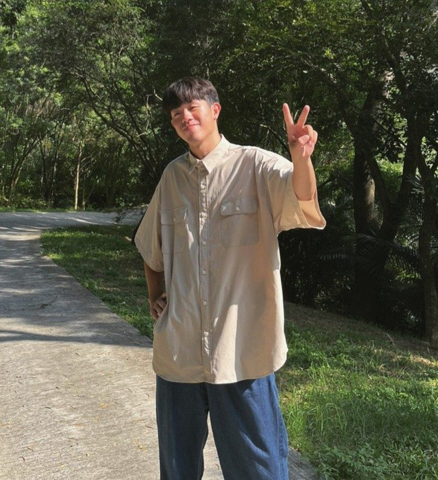
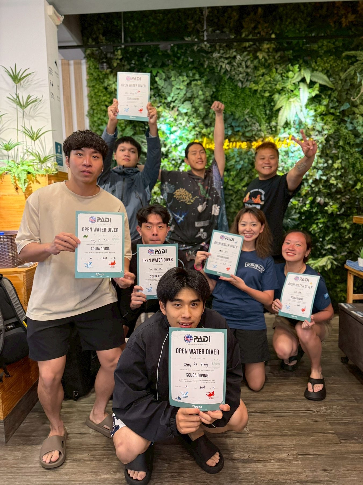
Life Themes
Each bigger trip gets its own section, timeline, notes, photos, and clips.
Open-water moments, surf practice, beaches, and days built around movement.
Group travel, night walks, food, streets, and the ordinary photos worth keeping.
Research, code, quant workflows, machine learning projects, and the compact CV corner.
Story Chapters
Not one mixed wall. Each chapter keeps its own context.
This is one travel chapter inside the larger life log. The route starts from Taiwan, passes through Hong Kong, stretches across Tibet by train, drops into Chongqing city lights, and ends in Japan with friends and fireworks.
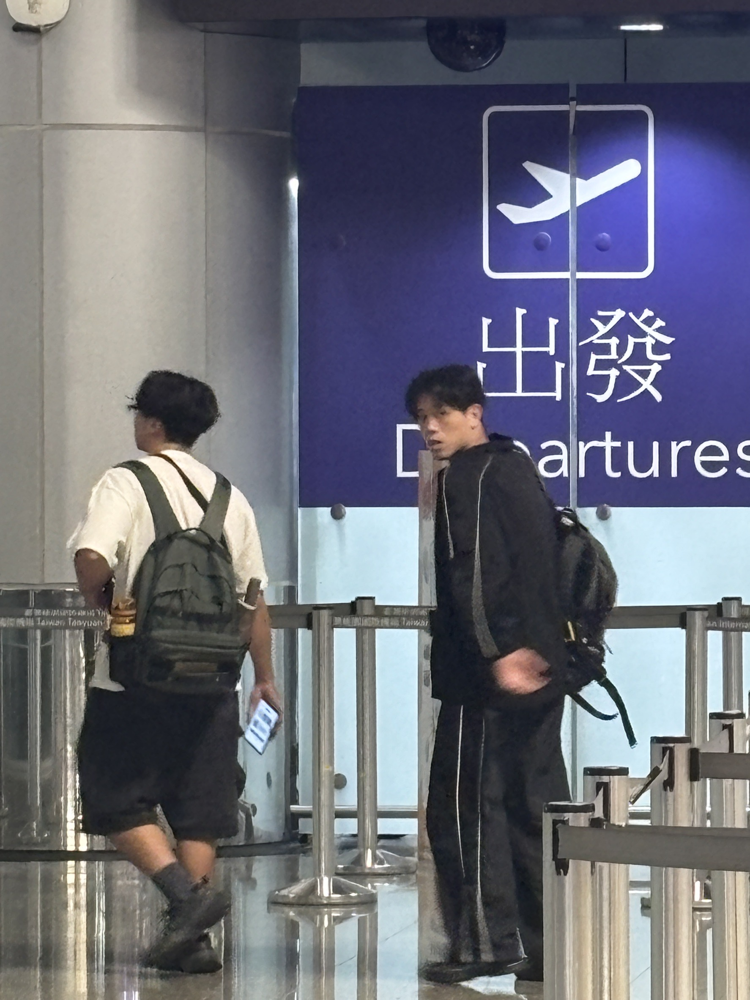
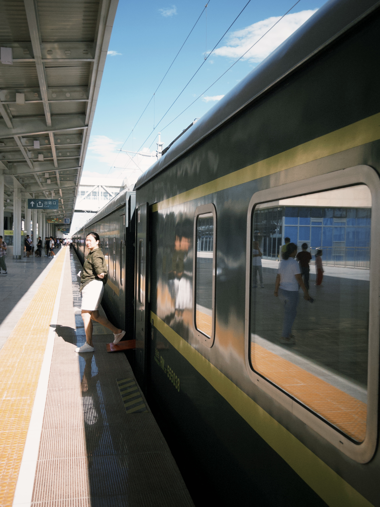
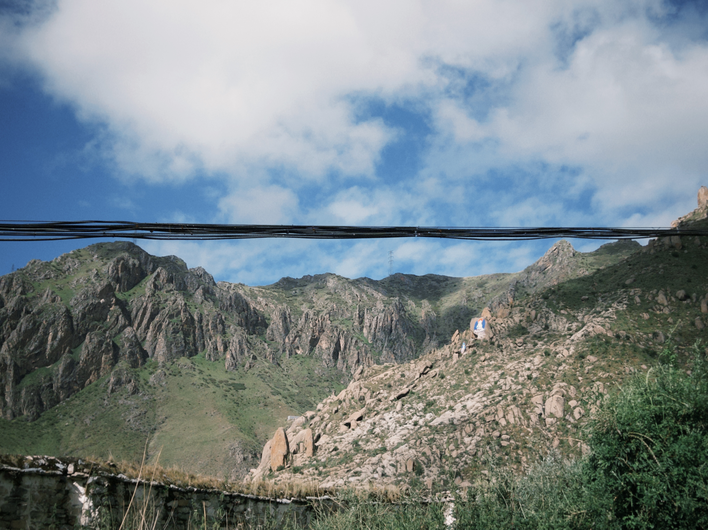
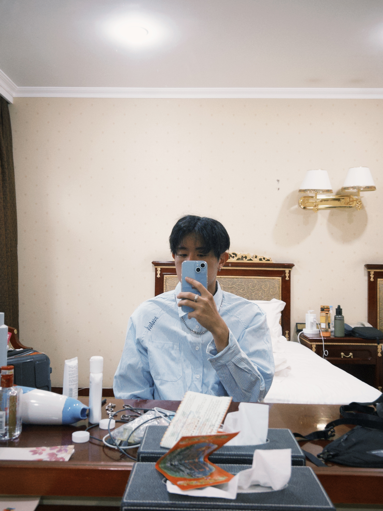
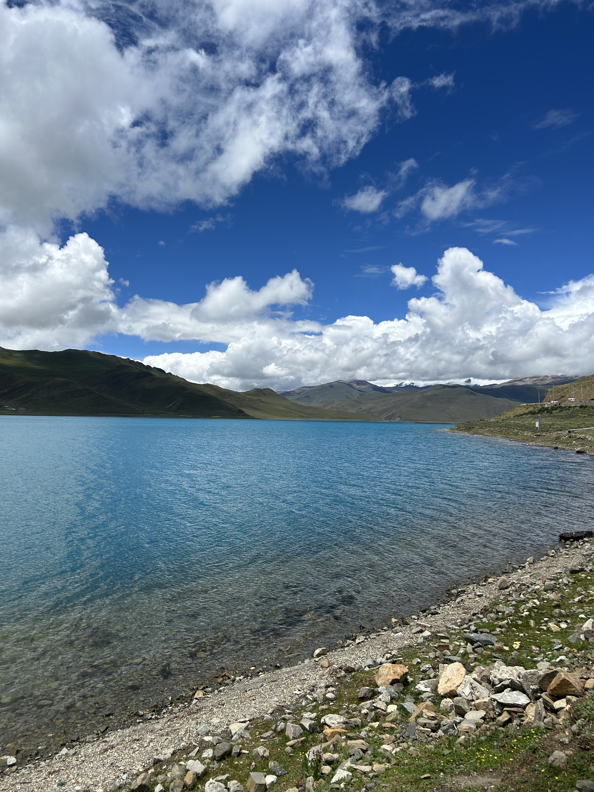
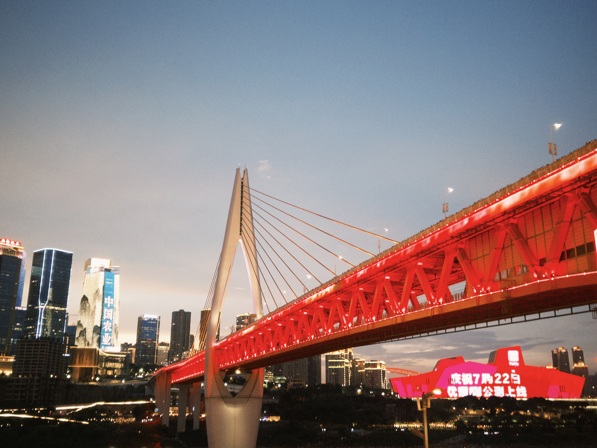
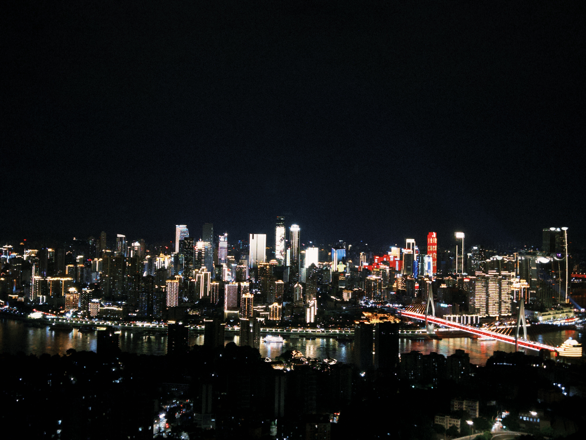
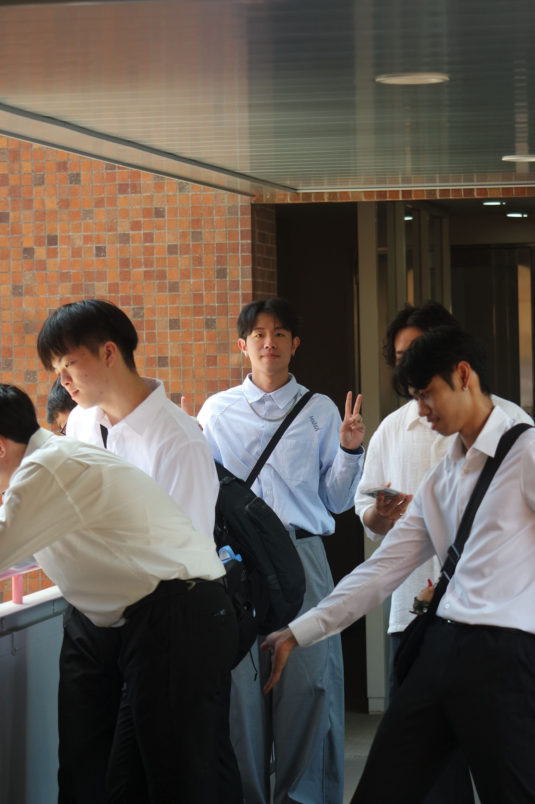
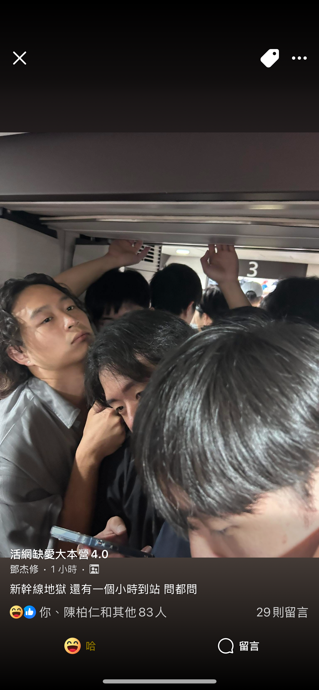
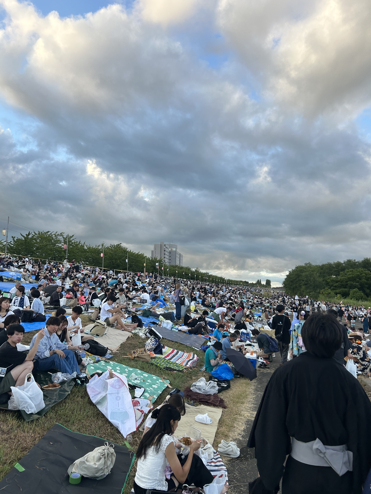
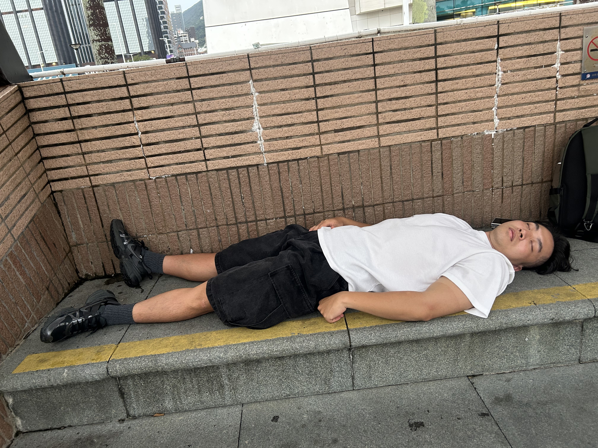
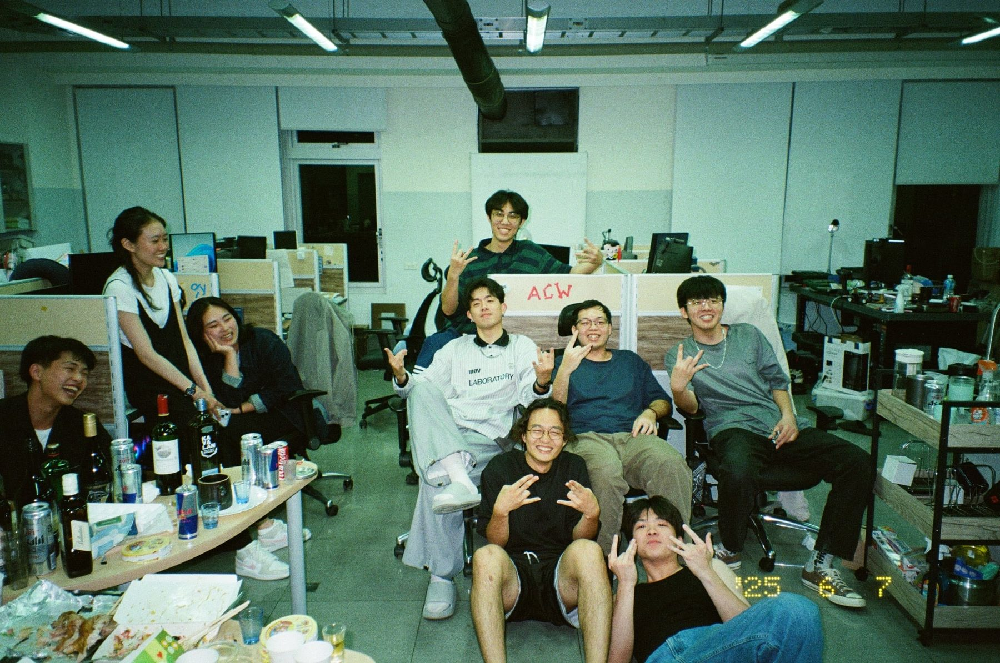
Lab / Taipei The everyday base: research, code, classes, and people between trips.My professional work focuses on market data pipelines, Qlib factor workflows, stock selection, BTC trend forecasting, and computer vision research at NTU.
Project 01 / Qlib / Taiwan Equity
An end-to-end Taiwan equity workflow built around Qlib data preparation, Alpha158/360 feature handlers, tree-based stock selection, backtesting, and trading utilities.
GitHub: hank187548/qlib-publicProject 02 / BTC Forecasting
A separate time-series forecasting project for BTC market direction, using GRU-Attention for 3-class trend prediction.
Project 03 / Image Processing
NTU research project using YOLO, Segment Anything Model, DeepLabCut, and SVM for detection, segmentation, gait tracking, and classification.
Contact
Based in Taipei, Taiwan. Fluent in English and native in Mandarin.